Merchandising, from concept to checkout.
I am a senior at Baylor University graduating in December of 2026 with a degree in Apparel Merchandising and a Minor in Entrepreneurship and Corporate Innovations. I am a creative product development professional skilled in trend research, concept creation, and building market-ready assortments.
I am experienced in aligning materials, colors, and design details with consumer insights and brand strategy, with hands-on experience in buying, assortment planning, and advanced Excel for data analysis and inventory management. Take a look at some of my projects to get to know more about me!
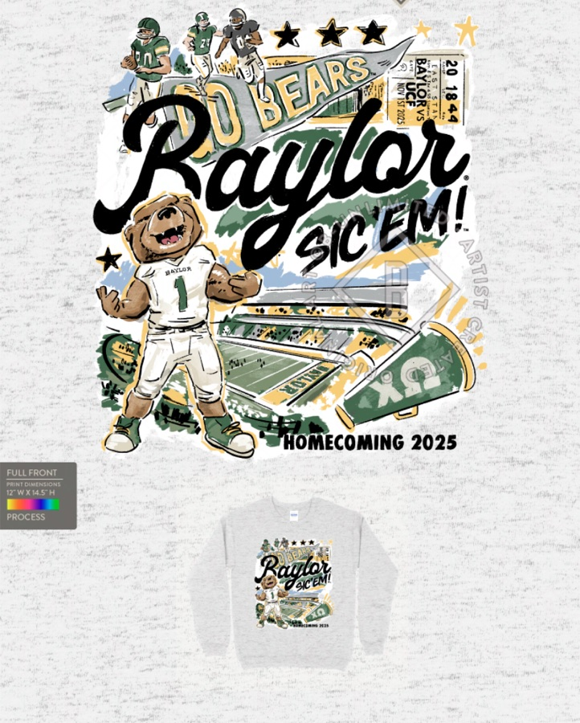
Chi Omega Merchandise Chair 21 designs for 400+ members Buying & Product Development Buy plans, textiles, consumer research
Buying & Product Development Buy plans, textiles, consumer research
 Technical Flats & Illustration Adobe Illustrator line work
Technical Flats & Illustration Adobe Illustrator line work
 Photography Camp media and senior sessions
Photography Camp media and senior sessions


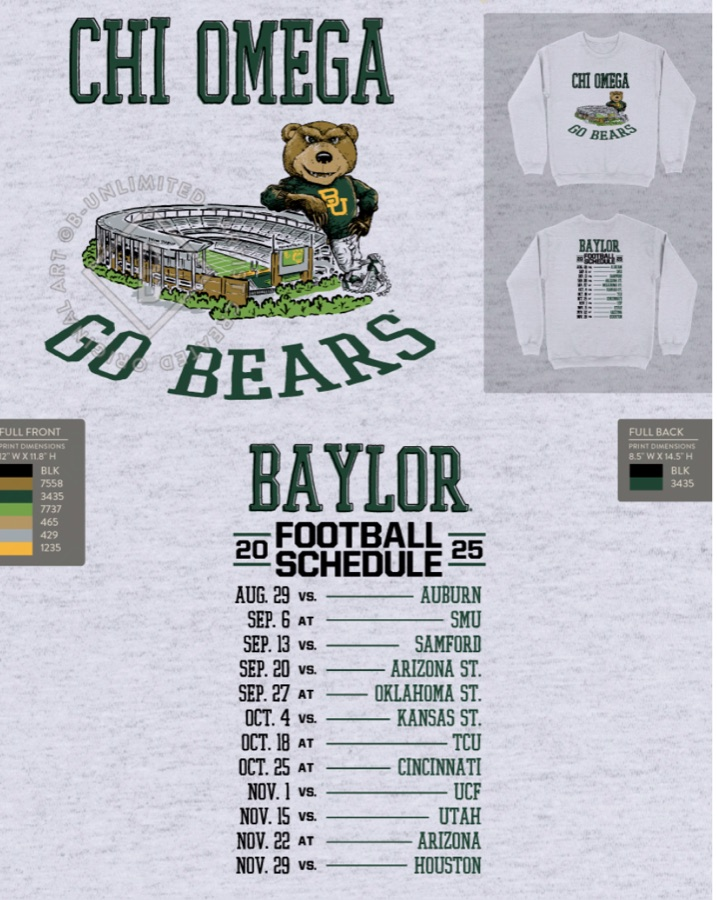
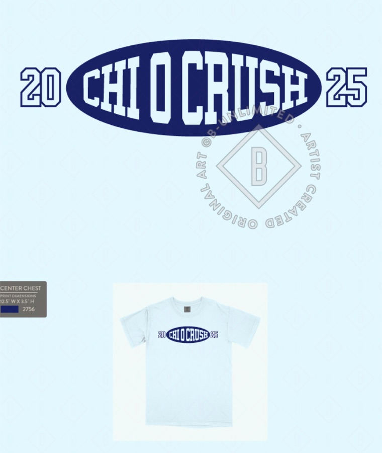

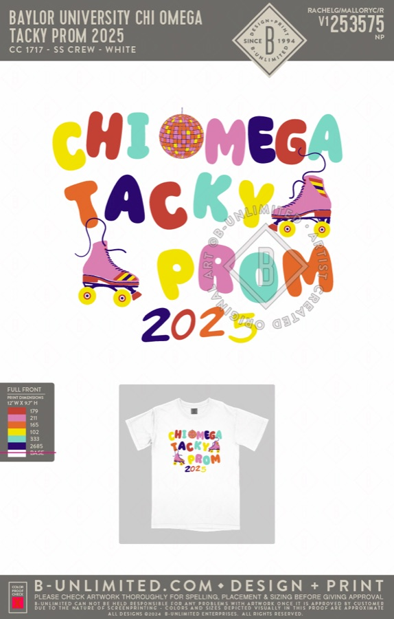

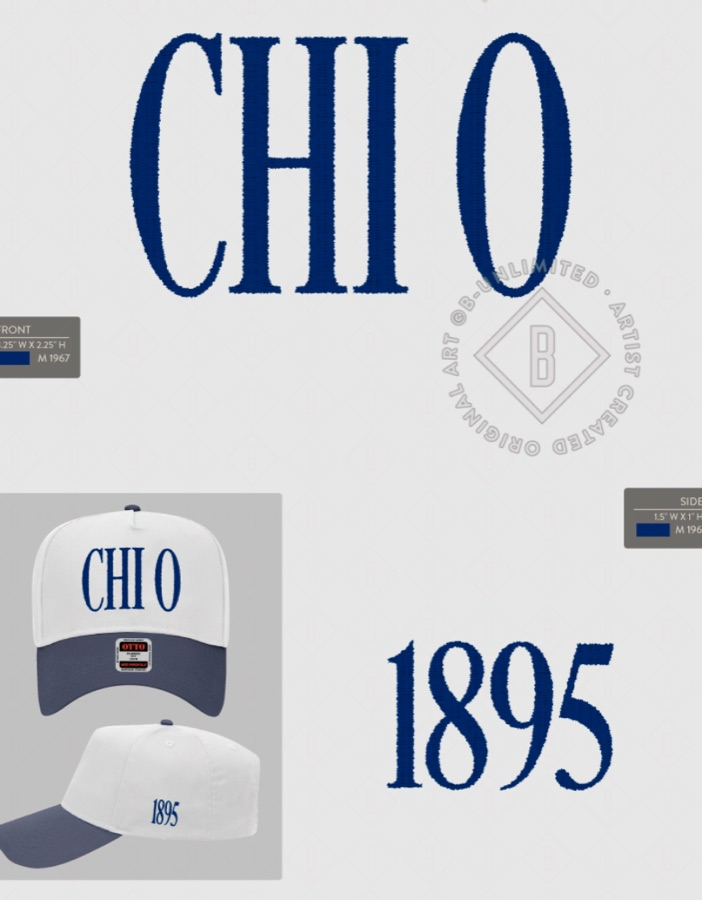

NY Bridal Fashion Week Intern
Netta BenShabu, New York City
Boys' Apparel Buying Intern
Academy Sports + Outdoors
New York Fashion Week Volunteer
NYFW BLK, Yirko Sivirich
Retail Associate & Media Creator
Pine Cove Camps
Studio Associate
Dish-It-Out Pottery, Charlotte NC


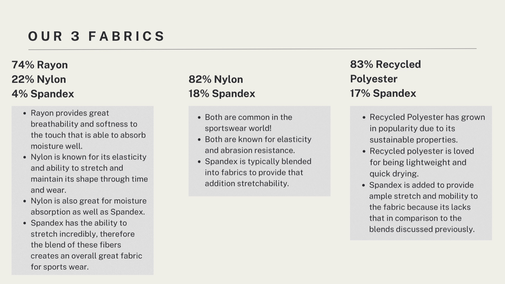


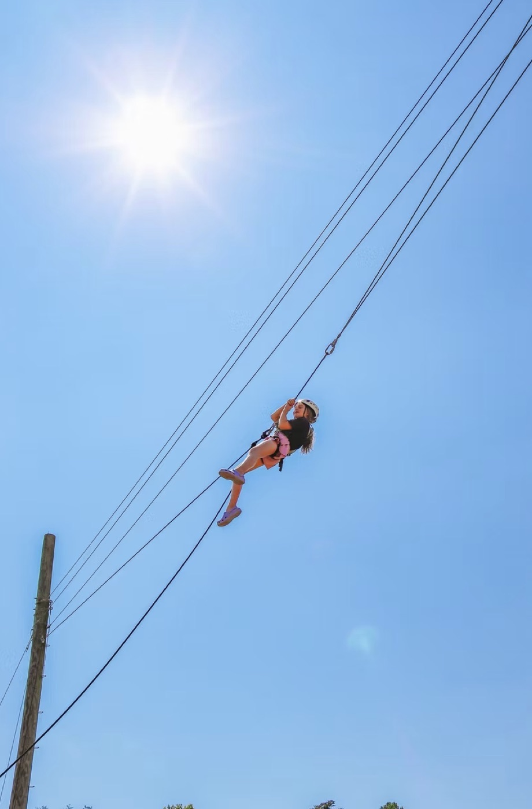
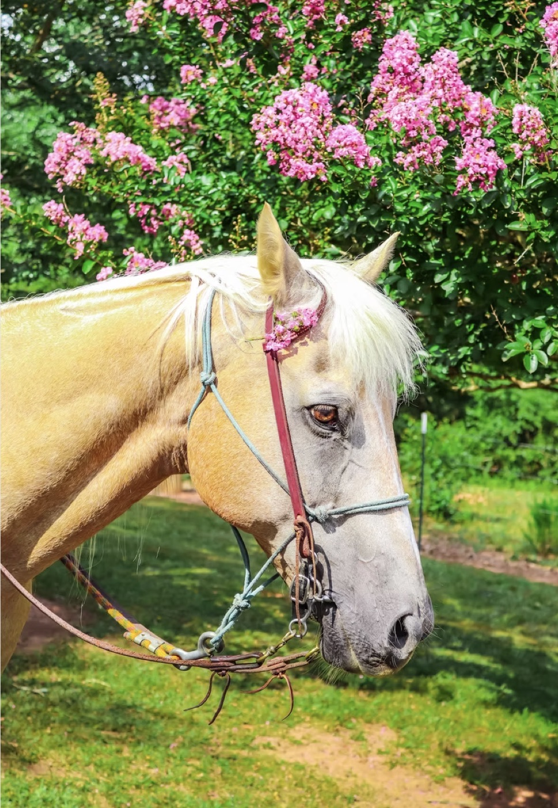


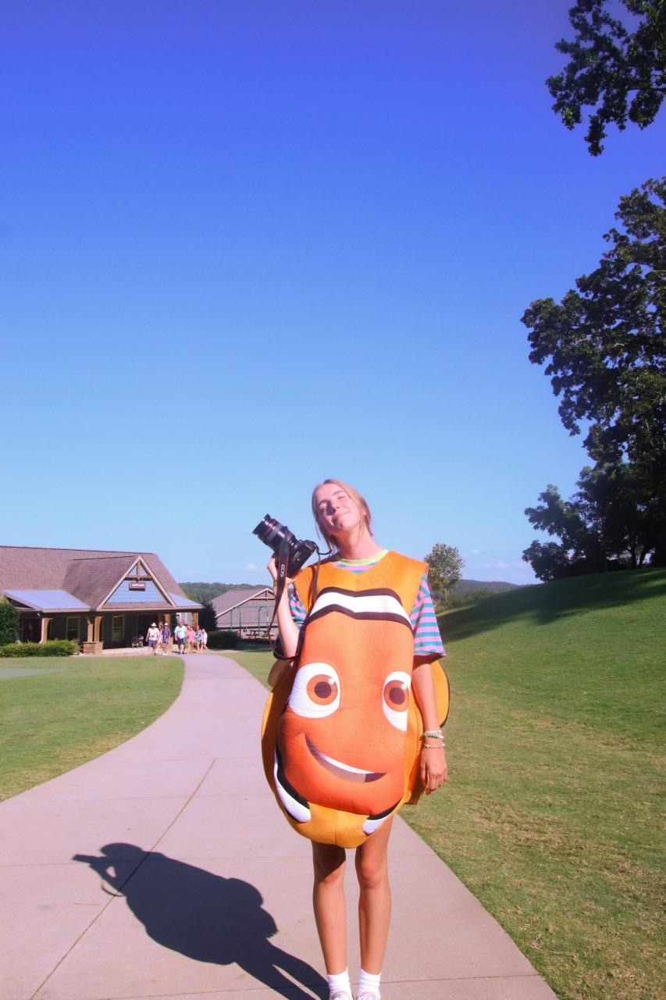
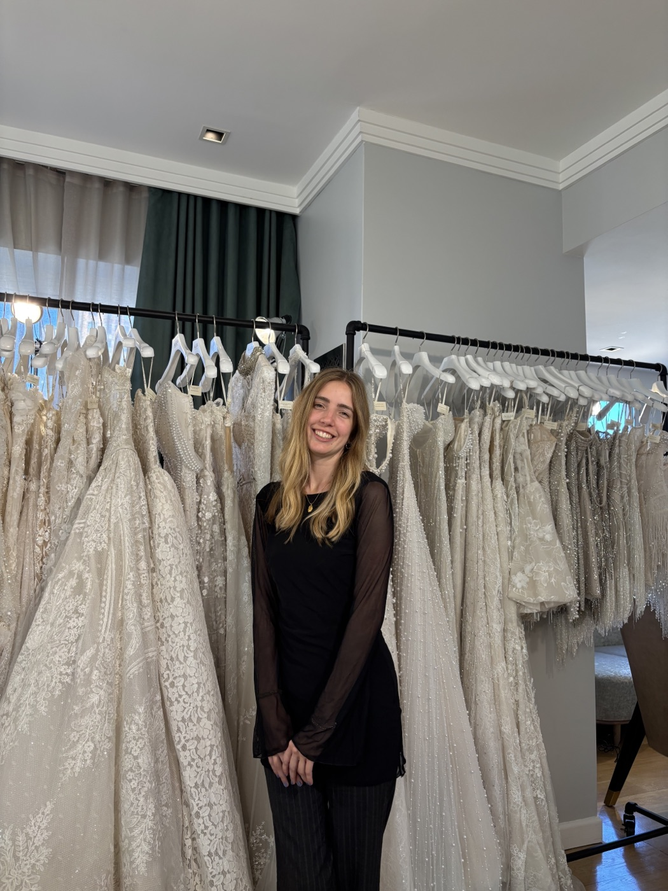
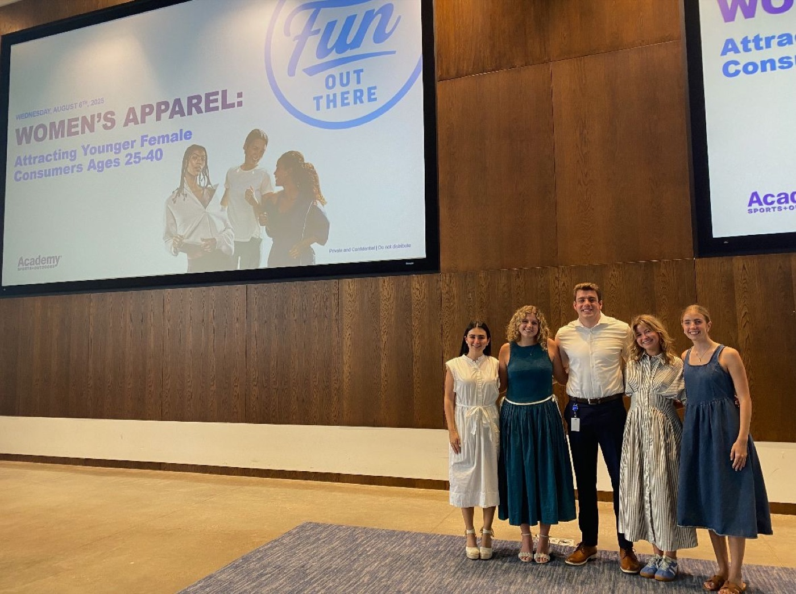
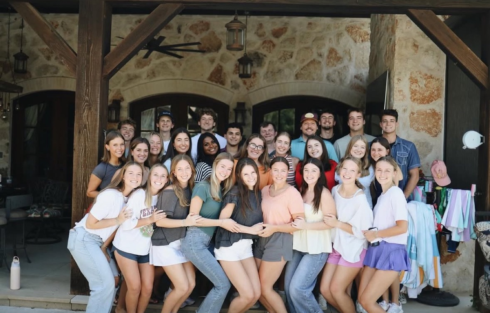

Leadership
T-Shirt Chair, Chi Omega Theta Kappa · Greekwide Leader · Baylor Transfer Mentor
Skills
Assortment & buy planning · Trend and consumer analysis · Advanced Excel · Adobe Illustrator, InDesign, Photoshop, Premiere Pro · Photography